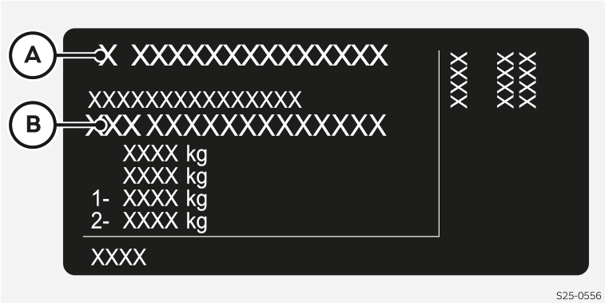

Numéro d’identification du véhicule (FIN)
Le numéro d’identification du véhicule se trouve aux endroits suivants :
Dans l'espace sous le rabat avant à droite
Sur un panneau sous le pare-brise dans le coin inférieur gauche
Sur la plaque signalétique au bas du montant central droit du véhicule

- A
Fabricant du véhicule
- B
Numéro d’identification du véhicule (FIN)
Affichage FIN
Dans l’infodivertissement, appuyer sur


 .
.Sélectionner l’écran avec l’affichage du NIV.


Numéro du moteur
Le numéro du moteur est gravé sur le bloc-moteur.